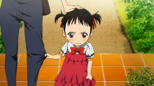

第06话：归途
钢琴比赛的报名表已经交了，可公生的演奏还是一塌糊涂，薰不厌其烦一直引导着公生。小椿看着他们两人嬉笑的身影，觉得自己离公生的世界越来越远。为了逃避自己喜欢公生的事实，小椿和前辈交往，但是在前辈面前一直说的都是关于公生的话题。小椿情绪不稳，输掉了棒球比赛，伤心难过的她遇到公生，青梅竹马的回忆浮上心头……
钢琴比赛的报名表已经交了，可公生的演奏还是一塌糊涂，薰不厌其烦一直引导着公生。小椿看着他们两人嬉笑的身影，觉得自己离公生的世界越来越远。为了逃避自己喜欢公生的事实，小椿和前辈交往，但是在前辈面前一直说的都是关于公生的话题。小椿情绪不稳，输掉了棒球比赛，伤心难过的她遇到公生，青梅竹马的回忆浮上心头……
阿渡和小椿初中时代的最后一场比赛结束了，三人中只剩下公生的比赛还未结束。公生反复练习比赛曲目，在薰的鼓励下逐渐摆脱过去的阴影。比赛的日子到了，公生重新踏上钢琴赛场，邂逅了自己曾经的对手相座武士和井川绘见。两年后的再会让武士和绘见热血沸腾，武士发誓要成为超越公生的存在。
相座武士放弃了德国的比赛邀请，执意参加每报音乐赛，只为了和公生一决高下。终于轮到武士登场，他娴熟的技法另公生惊讶不已。井川小时候被公生的演奏感动，因此决定要成为钢琴家。井川憧憬着富有感情的公生，并以否定机械般存在的公生为目标。这次井川面对自己的宿敌，她会弹奏出怎样的乐曲呢？
井川演奏的曲子饱含深情，音色犹如向日葵般明快，公生感到了心中的悸动。薰的身体状况越来越差，但她仍坚持为公生加油。轮到公生上场了，他努力摆脱恐惧，演奏的精准无比。但幼时的回忆突然涌上心头，母亲的死是公生无法抹去的痛，他自认为受到了母亲的惩罚，因此才无法听到琴声。一时间公生陷入慌乱，钢琴的节奏全乱了……
公生强迫自己集中精神，但还是无法摆脱心魔，曲调越弹越快。公生中断演奏，心灰意冷的他想起了薰给与的祝福，公生决定为了薰再次演奏。他以对薰的感情为想象图变换音色，弹奏了一曲充满四月气息的曲子，震撼了全场观众，薰更是落下感动的泪水，公生自己也终于摆脱了母亲的噩梦。
公生的演奏结束了。回到赛场休息室的公生，出现在他面前的是已故母亲的朋友·濑户纮子。身为日本首屈一指的钢琴家的纮子，读出了公生寄托在钢琴中的心意。——钢琴会引出演奏者的一切哦。公生对这番话语感到困惑。之后，比赛结果发表了，武士和绘见在见到公生莫名愉快的表情时，也确实感受到了他的变化与成长……
薰在主办者推荐下被选中参加藤和音乐比赛的庆典音乐会，在她的邀请下，公生再次面对钢琴。薰所选的曲子是克莱斯勒的《爱的忧伤》，那是薰以前去公生家里时放在书架上的乐谱。《爱的忧伤》是公生去世的母亲经常弹奏的……对于公生来说，那是能让他感受到母亲味道的曲子。